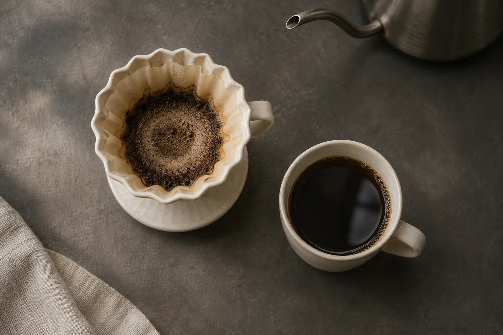
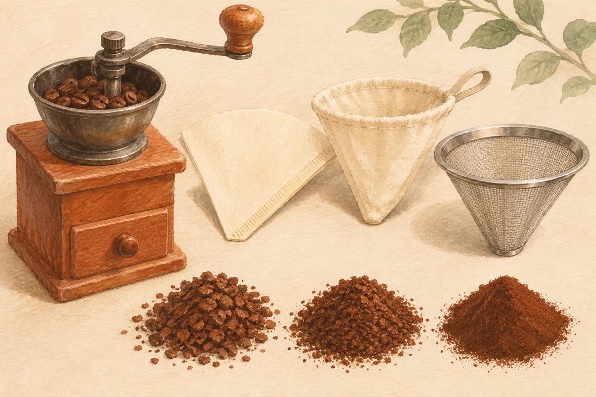

THE HOME COFFEE GUIDE
一杯から、淹れ方を知る。
お湯の注ぎ方、豆の挽き目、フィルター。
小さな工夫で、いつもの一杯が変わります。

01 / BREW GUIDE
今日の一杯で試す
気になるところから、ひとつだけ。


READING ROOM
記事一覧
カテゴリ
ABOUT THE GUIDE
THE HOME COFFEE GUIDE
お湯の注ぎ方、豆の挽き目、フィルター。
小さな工夫で、いつもの一杯が変わります。

01 / BREW GUIDE
気になるところから、ひとつだけ。

READING ROOM
ABOUT THE GUIDE